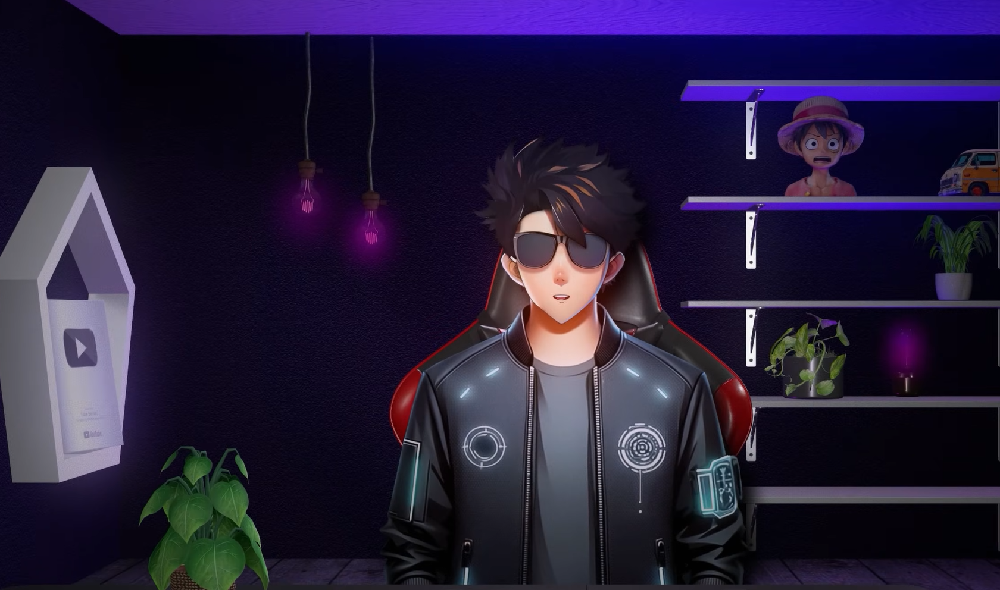

TESSRA AI
Our Mission
Transforming defense
capabilities with advanced
technology.
The battlefield has changed. How we deter & defend needs to change too.
Security threats are evolving at machine speed. To keep pace, Tessra AI puts products ahead of process and builds technology to bring India and its allies quantum leaps ahead in capability.
Learn more about our mission →

Roadrunner
Twin-Turbojet VTOL
Autonomous Air Vehicle (AAV)
Roadrunner is a reusable vertical take-off and landing (VTOL) Autonomous Air Vehicle (AAV) with twin turbojet engines and modular payload configurations.
Learn More About Roadrunner →DARPA
Shield AI enabled the X-62 VISTA to autonomously fly and perform tactical maneuvers against human pilots.
READ MORE
MQ-20
Hivemind flies MQ-20 Avenger autonomously at Orange Flag test event.
READ MORE
KRATOS
Shield AI conducted dual-ship autonomy tests using Kratos’ MQM-178 Firejet drones.
READ MORE
Careers
Join us in creating
the future of
defense.
From light bulb to functional prototype in a week.
A team rallying around a shared intention to make a
positive impact by creating a safer world. That’s life
at Tessra AI.
